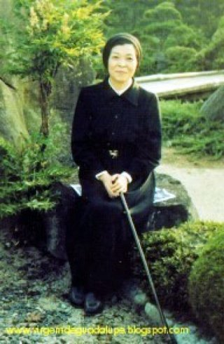
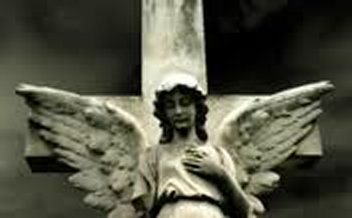
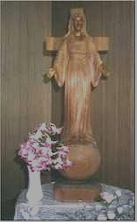
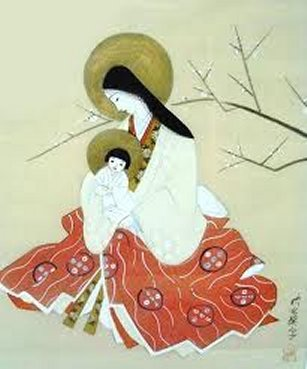
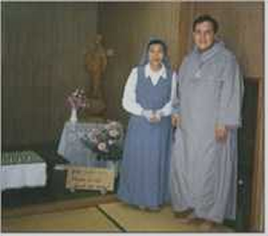

AS MANIFESTAÇÕES SOBRENATURAIS
LUZ QUE SAI DO SACRÁRIO
No dia 12 de
Junho de 1973, as Irmãs tendo que ir a uma reunião de Catequistas na Prefeitura
de Niigata, foi pedido a Irmã Inês que 
A Irmã Inês escreveu no seu Diário, a extraordinária e sobrenatural experiência que teve:
“Aproximei-me para abrir a portinha do Sacrário, como a Superiora mandou, logo irrompeu dele uma luz fulgurante e desconhecida. Muito emocionada, prostrei-me imediatamente com o rosto no chão. Evidentemente não me atrevi a abrir a porta do Sacrário. Permaneci talvez uma hora nessa posição. Subjugada por uma força superior, fiquei imóvel, incapaz de erguer a cabeça, mesmo depois de a luz ter desaparecido”...
A Irmã Inês continua a narrativa:
“No dia seguinte de manhã, quarta-feira, tendo acordado cedo, aproveitei para ir a Capela uma hora antes das outras Irmãs. Estava desejosa de saber se a luz da véspera não teria sido uma ilusão momentânea. Quando de mãos postas me aproximei do Altar, onde se encontra o Sacrário, fui novamente atingida pela luz fulgurante. Recuei instintivamente e prostrei-me em adoração”... “Não era ilusão, JESUS tinha se manifestado realmente, com o seu poder e seu imenso Amor”...
“Na quinta-feira, dia 14 de Junho de 1973, quando me encontrava na Capela, com outras Irmãs, rezando diante do SANTÍSSIMO SACRAMENTO, vi jorrar outra vez a mesma luz, mas desta vez rodeada por uma chama vermelha que partia do centro e parecia envolver todo o clarão que provinha do Sacrário. Uma maravilha indescritível. A extremidade da chama era cor de ouro e todo o Sacrário parecia estar em brasa”.
“Fiquei impressionada e me prostrei imediatamente. Permaneci num estado de assombro e não conseguia pensar senão em adorar e dar graças diante do SANTÍSSIMO SACRAMENTO.
Nos dias que se seguiram, a Irmã Inês vivia como se estivesse flutuando, estava possuída por uma maravilhosa sensação de felicidade, e na sua mente, só existia um desejo, correr para a Capela e permanecer dando graças diante do SANTÍSSIMO SACRAMENTO. As outras Irmãs, que também rezavam na Capela, nada perceberam.
Então, tendo em vista os fatos que ocorreram, agora podemos afirmar, que a visão da luz celeste foi como que um convite do SENHOR a Irmã em particular, e que por isso mesmo, somente ela pode presenciar aquela admirável manifestação sobrenatural.
UMA LEGIÃO DE ANJOS NA LUZ
No dia 23 de Junho, o senhor Bispo Dom John Shojiro Ito, chegou ao Convento pouco depois do meio dia. No dia seguinte era Domingo, Festa do SANTÍSSIMO SACRAMENTO. No Instituto das Servas da Eucaristia esta festa se reveste de uma importância particular, porque sendo a Comunidade Religiosa as Servas da Eucaristia, ou seja, as Servas de JESUS Eucarístico, elas naturalmente se sentem como se fosse “o dia delas, a Festa delas, da Comunidade”.
Por outro lado, elas já estavam desde o dia 5 de Junho sem Missa e sem Capelão, desde a saída do Padre que atendia a Comunidade. Sendo ele, o Bispo Ito, fundador da Comunidade, passou uma semana com as Irmãs, celebrando a Santa Missa todos os dias, instruindo-as com diretrizes administrativas e dando-lhes a assistência que necessitavam.
Durante os três dias que se seguiram a Festa do SANTÍSSIMO SACRAMENTO, a hora da adoração, das 8:00 horas às 9:00 hs da manhã, foi assegurada por quatro Irmãs que rezavam fervorosamente, sendo uma delas a Irmã Inês. Na quinta-feira, dia 28 de Junho de 1973, véspera da Festa do SAGRADO CORAÇÃO DE JESUS, durante a adoração, depois da Santa Missa, descreve a Irmã Inês no seu Diário:
“Como das outras vezes, a luz fulgurante irrompeu do SANTÍSSIMO SACRAMENTO e semelhantemente a um nevoeiro ou uma pequena nuvem, ficou flutuando ao redor do Altar, em torno do raio de luz que saia da Hóstia. Seguidamente apareceu uma multidão de seres parecidos com Anjos, que rodeavam o Altar em atitude de adoração diante da Hóstia Consagrada. Cativada por esse espetáculo surpreendente, ajoelhei-me para adorar. Eu estava impressionada e sensibilizada com tão imensa e extraordinária beleza. O brilho que a Hóstia irradiava era tão intenso que não se podia olhar fixamente para ela, e fechando os olhos, prostrei-me instintivamente. Terminada a hora de adoração, permaneci na mesma posição, sem me aperceber que as outras Irmãs já haviam deixado a Capela”.
Á tarde deste dia, caberia a Irmã Inês levar o chá para o senhor Bispo. Ela encheu-se de coragem e descreveu-lhe todos os fatos que se passaram. O senhor Bispo com muita sabedoria deu-lhe preciosos conselhos e mandou que ela continuasse cultivando a sua humildade, sem acalentar pensamentos orgulhosos, por ter sido a escolhida do SENHOR. Ela entendeu tudo o que o senhor Bispo lhe transmitiu, lendo os lábios dele, porque ela nada ouvia e não falava.
Neste dia a tarde, depois que se encontrou com o senhor Bispo, estava rezando na Capela diante do SANTÍSSIMO, e sentiu uma forte agulhada na palma da mão esquerda.
Na sexta-feira seguinte, dia 29 de Junho, no horário das 9:00 às 10:00 horas de adoração, coube a Irmã Inês em companhia de outra Irmã, rezar diante do SANTÍSSIMO, e aconteceu outra manifestação, que ela descreveu assim no seu Diário:
“No momento em que peguei no Terço para começar as orações, um personagem apareceu junto de mim, do lado direito, o mesmo que esteve ao meu lado quando me encontrava internada no Hospital, e ali permaneceu durante a reza do Terço. Depois da invocação: NOSSA SENHORA do Santíssimo Rosário, rogai por nós, o personagem desapareceu”.
“Seguiu-se a oração silenciosa. Logo em seguida, da Hóstia que estava no Sacrário aberto surgiu à luz refulgente. Prostrei-me imediatamente em adoração e quando ergui os olhos, vi uma suave claridade que envolvia todo o Altar e nela, apareceu uma legião de Anjos voltados para o SANTÍSSIMO SACRAMENTO, proclamando em voz alta: SANTO, SANTO, SANTO. E logo ouvi uma voz, a minha direita, daquele mesmo personagem, que devia ser também um Anjo, rezando assim”:
“SANTÍSSIMO CORAÇÃO DE JESUS, realmente presente na SAGRADA EUCARISTIA, eu VOS consagro o meu corpo e a minha alma para ser inteiramente uma com o VOSSO CORAÇÃO, sacrificado em cada instante e em todos os Altares do mundo, em louvor do PAI e para implorar a vinda do SEU Reino. Peço-VOS, recebei esta humilde oferta de mim própria. Usai-me segundo a VOSSA Vontade para a Glória do PAI e para a salvação das almas. SANTÍSSIMA MÃE DE DEUS não permita nunca que eu me separe do VOSSO DIVINO FILHO. Peço-VOS defendei-me e protegei-me como VOSSA filha predileta. Amém”.
Disse a Irmã Inês: “Para mim foi muito fácil repetir esta oração, porque é a oração das Servas da Eucaristia, e eu a conheço de cor”.
Ao terminar as orações, a Irmã sentiu novamente uma profunda fisgada na mão esquerda, que instintivamente a fez dobrar os dedos. Ao sair da Capela, afastou furtivamente os dedos dobrados e descobriu, no meio da palma da mão, dois arranhões vermelhos em forma de cruz, com 2 cm de altura por 3 cm de largura.
A CHAGA NA SUA MÃO
No sábado, dia
30 de Junho, o senhor Bispo se preparando a regressar a Niigata, depois de uma
semana de estadia no Convento das Irmãs, 
“Fiquei tão contente por receber essa autorização que teria gritado de alegria. Foi uma felicidade indizível, que me permitia poder consagrar tudo a DEUS. Minha emoção foi tão grande, que tive dificuldade em encontrar palavras para lhe agradecer”.
Depois que o senhor Bispo viajou, a dor na palma da sua mão esquerda aumentou consideravelmente e estava ficando difícil para ela escondê-la das outras Irmãs. Era como se lhe tivessem cravado uma cruz na palma da mão. Tinha uma cor rosada, mas não era repugnante como as feridas em geral, até irradiava certa beleza. Não sangrava, mas doía muito.
O fato de a Irmã Inês manter a mão esquerda fechada, naturalmente escondendo a chaga em forma de cruz, despertou a curiosidade das outras Irmãs, e uma delas, que sempre lhe fazia companhia na adoração, perguntou-lhe o que estava acontecendo. Ela timidamente mostrou-lhe a mão. Foi uma grande surpresa, toda a Comunidade verdadeiramente pode perceber que se tratava de uma manifestação sobrenatural.
No dia 5 de Julho, quinta-feira, a dor tornou-se insuportável e começou a sangrar na junção da cruz. Ela mantinha a mão esquerda fechada para evitar o sangramento e poder realizar o seu serviço. Sozinha em seu quarto, sentindo muitas dores, teve a necessidade de fazer algum trabalho para não pensar na dor. Com dificuldade começou a fazer o crochê, e trabalhando sem parar dizia a jaculatória: “SENHOR, tem piedade, perdoai as minhas ofensas e os meus pecados”. Aquela Irmã que sempre a acompanhava na adoração, bateu e entrou no seu quarto, e vendo o estado dela, quis consolá-la. Chamou a Superiora e juntas, colocaram uma gaze e envolveram a mão para protegê-la. Depois recomendaram a Irmã Inês: “Nos chame, se a dor aumentar”.
A Irmã Inês escreveu em seu Diário que foi uma noite difícil, que mudou o curativo das mãos diversas vezes, porque sangrava bastante. Mas, rezando em silêncio, suportou as dores, e pedia a DEUS, perdão pelos seus muitos pecados e pelos pecados cometidos pela humanidade.
A PRIMEIRA MENSAGEM DE NOSSA SENHORA

“Não temas. Reza com fervor não apenas por causa dos teus pecados, mas em reparação por todos aqueles cometidos pela humanidade. O mundo atual fere terrivelmente o SANTÍSSIMO CORAÇÃO DE NOSSO SENHOR com as suas ingratidões e injúrias. As chagas de MARIA são muito mais profundas e mais dolorosas que as tuas. Vamos à Capela rezar junto”.
Quem assim falava, é o belo personagem que tinha rezado com ela na Capela, e que era, por certo, o seu Anjo da Guarda. Ele fez sinal para ela sair do quarto e desapareceu. Irmã Inês descreveu o que aconteceu, no seu Diário:
“Vesti-me rapidamente e quando saí para o corredor, Ele já estava alguns passos a minha frente. Segui-o com passadas ligeiras no longo corredor, cheia de um sentimento de segurança comparável ao de uma criancinha que se leva pela mão”... “Na Capela dirigi-me a imagem da SANTÍSSIMA VIRGEM MARIA e olhei fixamente para Ela. Estava envolta numa luz deslumbrante! Instintivamente prostrei-me no chão, e então, uma Voz de uma beleza indescritível ressoou nos meus ouvidos, totalmente surdos”:
“Minha filha, Minha noviça, tu foste obediente, deixaste tudo para ME seguir. A doença dos ouvidos é dolorosa? A tua surdez será curada. Tenha paciência. É a última provação. A chaga da mão te causa dores? Reza em reparação dos pecados da humanidade. Cada membro desta Comunidade é minha filha insubstituível. Rezas com fervor a Oração das Servas da Eucaristia? Então, vamos rezá-la junto”.
Falou a Irmã Inês:“Quando a Voz que me falava (que era da imagem de NOSSA SENHORA) começou a oração, o meu Anjo da Guarda reapareceu e juntou sua voz as nossas”.
“SANTÍSSIMO CORAÇÃO DE JESUS, realmente presente na SAGRADA EUCARISTIA, eu VOS consagro o meu corpo e a minha alma para ser inteiramente uma com o VOSSO CORAÇÃO, sacrificado em cada instante e em todos os Altares do mundo, em louvor do PAI e para implorar a vinda do SEU Reino. Peço-VOS, recebei esta humilde oferta de mim própria. Usai-me segundo a VOSSA Vontade para a Glória do PAI e para a salvação das almas. SANTÍSSIMA MÃE DE DEUS não permita nunca que eu me separe do VOSSO DIVINO FILHO. Peço-VOS defendei-me e protegei-me como VOSSA filha predileta. Amém”.
Depois NOSSA SENHORA disse: “Reza muito pelo Papa, pelos Bispos e pelos Sacerdotes. Desde o teu Batismo que tens rezado fielmente por eles. Continue a rezar muito, muito. Transmite ao teu Superior o que hoje se passou e obedeça-lhe em tudo quanto ele te disser. Presentemente, ele pede que todos rezem com fervor”.
A Voz calou-se e após um breve instante, o Anjo rezou outra oração com ela. Assim que terminou, desapareceu. Irmã Inês ergueu timidamente a cabeça, olhando para a imagem de NOSSA SENHORA, e viu que o esplendor luminoso que a envolvia tinha desaparecido, e a imagem retomara o seu aspecto habitual.
Quando ela se
recompôs da emoção, reparou que uma Irmã estava rezando próximo dela, o relógio
marcava cinco horas e dez minutos, e 
Retornando ao Convento, Irmã Inês estava curiosa em observar a imagem de NOSSA SENHORA, pois teve um pressentimento de que nela estava ocorrendo uma manifestação sobrenatural. Pediu a Irmã chefe das noviças para examiná-la e respeitosamente ficou aguardando. Como o tempo passava e a Irmã chefe não voltava, ela decidiu ir pessoalmente a Capela. Quando chegou, viu a Irmã chefe das noviças ajoelhada e de mãos postas diante da imagem da VIRGEM MARIA. Percebendo a presença da Irmã Inês, com os olhos repletos de lágrimas fez sinal para ela se aproximar e apontou para a mão direita da imagem. A Irmã Inês se aproximou e viu, tinha uma chaga na palma da pequena mão direita, em forma de cruz, e no cruzamento das linhas da cruz, escorria sangue. Imediatamente se prostrou, emocionada e agradecida por tanto amor.
Era, indubitavelmente um sinal visível, e que devia, prontamente, ser comunicado as outras Irmãs. Assim, logo chegou outra Irmã, que se prostrou e ficou rezando diante da imagem. As outras Irmãs estavam fazendo trabalhos externos e só chegaram mais tarde. Quando souberam da noticia, se entusiasmaram pela agradabilíssima surpresa, e também foram rezar diante da imagem da VIRGEM MARIA.
À noite, todas as Irmãs reunidas, conversaram sobre o acontecimento. Depois pediram a Irmã Inês que lhes mostrasse a mão esquerda com a chaga. Com admiração, observaram que a chaga na mão esquerda dela era absolutamente semelhante à chaga na mão direita da imagem de NOSSA SENHORA. A Irmã Inês não comentou nada, timidamente apenas pediu: “Rezem por mim, que sou uma pecadora”.
As Irmãs, no seu foro íntimo, estavam conscientes, de que aquela manifestação não era um fato fortuito, destinado a cair no esquecimento com o passar dos dias. Partilhavam com seriedade as apreensões da Irmã Inês, compreendendo que se tratava de “acontecimentos extremamente importantes”.
O SANGUE CONTINUA A BROTAR

A Santa Missa começou depois das 17 horas. No momento em que a Irmã, a sua discípula espiritual, leu o ato de consagração, as dores na mão da Irmã Inês atingiram um grau tão elevado, com uma intensidade tão grande, que insensivelmente um grito de dor lhe escapou, embora conseguisse reprimi-lo imediatamente. Era como se um grosso prego furasse a sua mão e logo a seguir, começou a brotar o sangue. Foi aguentando, mas transpirava um espesso suor. Aflita rezava interiormente: “SANTA MARIA, vinde em meu auxílio”. E num gesto ligeiro, agarrou a medalha que trazia ao pescoço e uniu, com todo o seu amor, os seus sofrimentos aos sofrimentos de JESUS na Cruz.
Um detalhe curioso: tanto na mão direita da imagem, como na palma da mão esquerda da Irmã Inês, o sangue brotava mas ficava em cima da mão, não caia no chão. No caso da Irmã, ainda era feito um curativo com gaze, que eliminava no momento, o excesso de sangue, quando ela estava nos aposentos. E também, sempre acontecia que a chaga da Irmã se abria de quinta para sexta-feira, ocasião em que sangrava. Raramente a chaga da Irmã Inês se abriu em outra data. São os dias da semana que recorda a Paixão do SENHOR. As dores permaneciam diariamente, uns momentos mais, outros, menos.
Esta experiência nos ensina que é necessário oferecer todos os sofrimentos da vida quotidiana em união com a Paixão de JESUS, em nosso próprio benefício e também, em benefício de todos os pecadores.
No dia seguinte, às duas e meia da tarde, Irmã Inês foi assaltada por uma dor aguda bem profunda, de uma intensidade incrível. Não resistindo, correu para a Capela como seu único refúgio. Lá estava uma Irmã rezando. Inês vencida pelas dores prostrou-se no chão. Imediatamente, a voz do seu Anjo da Guarda falou ao ouvido do seu coração:
“Hoje, o teu sofrimento chegará ao fim. Grava cuidadosamente no fundo do teu coração a recordação do Sangue de MARIA. O sangue derramado por MARIA, tem um profundo significado. Esse sangue precioso foi derramado para pedir a vossa conversão, para pedir a paz e em reparação das ingratidões e dos ultrajes contra o SENHOR. Assim, como tendes Devoção ao SAGRADO CORAÇÃO, tende também Devoção ao Preciosíssimo Sangue do SENHOR. Rezai em reparação pelos pecados de toda a humanidade”.
“Diz ao teu Superior que o sangue é derramado hoje pela última vez. Também as tuas dores chegam hoje ao fim. Conta-lhe o que se passou hoje. Ele compreenderá tudo imediatamente. E tu, cumpres as suas diretivas”.
Ele sorriu para a Irmã Inês e partiu.
A chaga na mão da Irmã Inês desapareceu e as dores dissiparam-se no mesmo dia, 27 de Julho, sem deixar o menor vestígio. Na imagem de NOSSA SENHORA, parou de brotar o sangue, mas o vestígio da chaga em forma de cruz, ainda permaneceu visível durante dois meses.